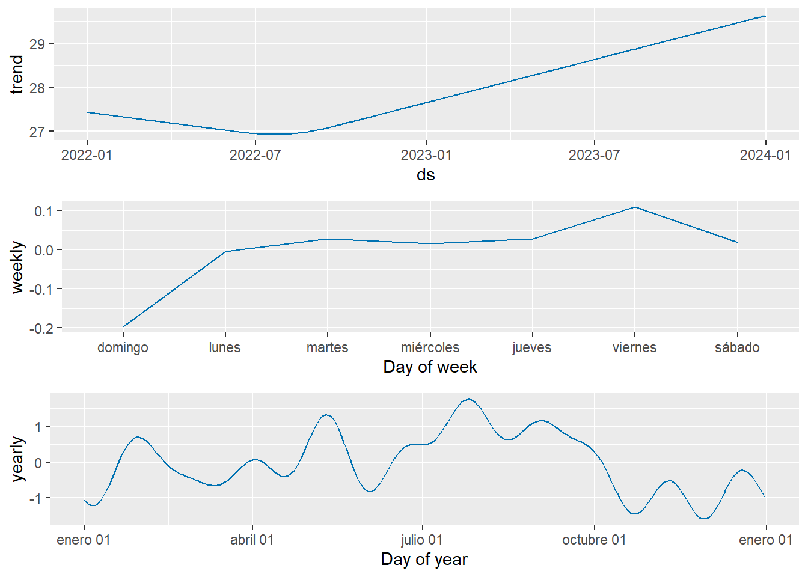

Capítulo 6 Regresión en series de tiempo
En el presente capítulo se aplica los modelos de regresión de series de tiempo como Prophet, ETS y ARIMA a la temperatura máxima diaria estudiada en el proyecto.
6.1 Selección de dataframes para regresión
Tal como se hizo en el capítulo anterior con Box-Jenkins para los Modelos estacionarios en series de tiempo, se trabajará con los datos de la temperatura máxima diaria, nuevamente con los conjuntos de datos de Valledupar entre 2018 y 2019 y con los de Medellín entre 2022 y 2023.
# Serie xts Temperatura máxima diaria Valledupar 2018-2019
VUP_temp_2018_2019 <- df_temp_max_ts["2018/2019", "VUP"]
# Serie ts Temperatura máxima diaria Valledupar 2018-2019
VUP_temp_2018_2019_ts <- as.ts(VUP_temp_2018_2019)
# Serie xts Temperatura máxima diaria Medellín 2022-2023
MED_temp_2022_2023 <- df_temp_max_ts["2022/2023", "MED"]
# Serie ts Temperatura máxima diaria Medellín 2022-2023
MED_temp_2022_2023_ts <- as.ts(MED_temp_2022_2023)En el presente capítulo, se aplica el modelo Prophet a las series estudiadas en los capítulos anteriores, temperatura máxima de Valledupar y de Medellín. Con este motivo se realiza el cargue de las librerías a ser requeridas.
Posterior a este cargue de las librerías, se obtienen las series de tiempo en la estructura de dataframe requerida para ser empleadas en el modelo de Prophet, adicionalmente ya que se desea realizar un comparativo con el modelo de predicción ARIMA y ETS se subdivide estos datasets en dos, uno para entrenamiento y otro para prueba.
Primero se realiza el proceso de la transformación a dataframe de la serie de tiempo de Medellín:
# Conversión serie temporal a dataframe para Medellín
dates_MED <- seq.Date(from = as.Date("2022-01-01"), by = "day", length.out = length(MED_temp_2022_2023_ts))
MED_temp_2022_2023_df <- data.frame(ds = dates_MED, y = as.numeric(MED_temp_2022_2023_ts))
head(MED_temp_2022_2023_df)## ds y
## 1 2022-01-01 27.4
## 2 2022-01-02 26.4
## 3 2022-01-03 27.8
## 4 2022-01-04 28.0
## 5 2022-01-05 28.2
## 6 2022-01-06 26.0## [1] "data.frame"# Train / test serie de tiempo Medellín
split_date_MED <- as.Date("2023-11-01")
train_df_MED <- subset(MED_temp_2022_2023_df, ds < split_date_MED)
head(train_df_MED)## ds y
## 1 2022-01-01 27.4
## 2 2022-01-02 26.4
## 3 2022-01-03 27.8
## 4 2022-01-04 28.0
## 5 2022-01-05 28.2
## 6 2022-01-06 26.0## ds y
## 670 2023-11-01 25.8
## 671 2023-11-02 27.6
## 672 2023-11-03 27.6
## 673 2023-11-04 27.8
## 674 2023-11-05 28.4
## 675 2023-11-06 24.8A continuación se hace el mismo proceso para Valledupar:
# Conversión serie temporal a dataframe para Valledupar
dates_VUP <- seq.Date(from = as.Date("2018-01-01"), by = "day", length.out = length(VUP_temp_2018_2019_ts))
VUP_temp_2018_2019_df <- data.frame(ds = dates_VUP, y = as.numeric(VUP_temp_2018_2019_ts))
head(VUP_temp_2018_2019_df)## ds y
## 1 2018-01-01 34.2
## 2 2018-01-02 32.3
## 3 2018-01-03 33.5
## 4 2018-01-04 33.4
## 5 2018-01-05 32.8
## 6 2018-01-06 34.2## [1] "data.frame"# Train / test serie de tiempo Valledupar
split_date_VUP <- as.Date("2019-11-01")
train_df_VUP <- subset(VUP_temp_2018_2019_df, ds < split_date_VUP)
head(train_df_VUP)## ds y
## 1 2018-01-01 34.2
## 2 2018-01-02 32.3
## 3 2018-01-03 33.5
## 4 2018-01-04 33.4
## 5 2018-01-05 32.8
## 6 2018-01-06 34.2## ds y
## 670 2019-11-01 35.0
## 671 2019-11-02 33.6
## 672 2019-11-03 35.2
## 673 2019-11-04 35.1
## 674 2019-11-05 35.4
## 675 2019-11-06 36.26.2 Modelos y predicción ARIMA, ETS y Prophet
A continuación se generan los modelos por las tres metodologías de ARIMA, ETS y Prophet para ambos casos, temperatura máxima de Medellín y de Valledupar. En primer lugar se corren los modelos para los datos de Medellín:
# ARIMA model
arima_model_MED <- auto.arima(train_df_MED$y)
forecast_arima_MED <- forecast(arima_model_MED, h = nrow(test_df_MED))
# ETS model
ets_model_MED <- ets(train_df_MED$y)
forecast_ets_MED <- forecast(ets_model_MED, h = nrow(test_df_MED))
# Prophet model
model_pp_MED <- prophet(train_df_MED, yearly.seasonality = TRUE)
future_dates_MED <- make_future_dataframe(model_pp_MED, periods = nrow(test_df_MED))
forecast_prophet_MED <- predict(model_pp_MED, future_dates_MED)A continuación se realiza el plot de los resultados de Prophet de Medellín:
# Plot de los componentes (tendencia, estacionalidad, etc.)
prophet_plot_components(model_pp_MED, forecast_prophet_MED)
En los gráficos previos se observa que la tendencia para la ciudad de Medellín es presentar un aumento de temperatura para los últimos meses del año y el primer mes de enero. También se observa una tendencia en los días de la semana a que el viernes este ligeramente por encima de la media, y en el comportamiento del año que los meses de julio, agosto y septiembre tienden a ser mas cálidos y el final de año posterior a mediados de octubre más fríos.
Ahora a continuación se realiza el mismo proceso para Valledupar:
# Prophet model
model_pp_VUP <- prophet(train_df_VUP, yearly.seasonality = TRUE)
future_dates_VUP <- make_future_dataframe(model_pp_VUP, periods = nrow(test_df_VUP))
forecast_prophet_VUP <- predict(model_pp_VUP, future_dates_VUP)
# ARIMA model
arima_model_VUP <- auto.arima(train_df_VUP$y)
forecast_arima_VUP <- forecast(arima_model_VUP, h = nrow(test_df_VUP))
# ETS model
ets_model_VUP <- ets(train_df_VUP$y)
forecast_ets_VUP <- forecast(ets_model_VUP, h = nrow(test_df_VUP))Y por último se procede con la gráficas de los resultados para Valledupar de Prophet:

# Plot de los componentes (tendencia, estacionalidad, etc.)
prophet_plot_components(model_pp_VUP, forecast_prophet_VUP)Se identifica que marzo-abril y julio-agosto son los periodos con temperaturas más altas mientras que las más bajas se encuentran en mayo-junio y septiembre-octubre, por otro lado el patrón semanal nos indica que los domingos y lunes son los días con las temperaturas más altas y que los martes y viernes la temperatura tiende a descender.
6.3 Comparación de modelos
A continuación se realiza un comparativo de los tres modelos aplicados (ARIMA, ETS y Prophet) empleando diferentes métricas y de manera gráfica su predicción versus los valores reales del subconjunto de prueba. Las métricas utilizadas para la comparación de los modelos son las siguientes:
Error Medio (ME):Indica si las predicciones están sesgadas. Un valor cercano a 0 es ideal. Los valores positivos sugieren sobreestimación, mientras que los valores negativos sugieren subestimación.
Error Cuadrático Medio (RMSE): Proporciona una medida de la magnitud media del error, es sensible a grandes errores debidos a la cuadratura y los valores más bajos indican un mejor rendimiento del modelo.
Error Absoluto Medio (MAE): Mide la magnitud media de los errores en un conjunto de predicciones, sin tener en cuenta su dirección. Los valores más bajos indican un mejor rendimiento del modelo.
Error Porcentual Medio (MPE): Indica el porcentaje promedio en que las predicciones se desvían de los valores reales, los valores positivos indican sobreestimación, mientras que los valores negativos indican subestimación. Un valor cercano a 0 es ideal.
Error Porcentual Medio Absoluto (AMPE): Similar a la MPE pero considera valores absolutos, proporcionando una medida de la magnitud promedio de los errores porcentuales. Los valores más bajos indican un mejor rendimiento del modelo.
Error Absoluto Medio Escalado (MASE): Proporciona una medida estandarizada de la precisión de la previsión, los valores superiores a 1 indican un peor rendimiento.
Error de escala cuadrática media (RMSSE): Similar a RMSE pero escalado para proporcionar una medida relativa, los valores inferiores a 1 indican un mejor rendimiento, mientras que los valores superiores a 1 indican un rendimiento peor.
Primera Autocorrelación de Residuos (ACF1): Mide la correlación entre los residuos que están separados por un paso de tiempo. Los valores cercanos a 0 indican que no hay correlación (ideal). Los valores positivos o negativos significativos sugieren que hay un patrón en los residuos que el modelo no ha capturado, lo que indica un problema potencial con el modelo.
6.3.1 Comparación modelos de regresión series Medellín
A continuación, se realiza la comparación de las métricas para los modelos aplicados a las series de temperatura máxima diaria en Medellín:
# Combinación de datos de los modelos de Medellín
test_df_MED$prophet <- subset(forecast_prophet_MED, ds >= split_date_MED)$yhat
test_df_MED$arima <- forecast_arima_MED$mean
test_df_MED$ets <- forecast_ets_MED$mean
head(test_df_MED)## ds y prophet arima ets
## 670 2023-11-01 25.8 28.34104 27.26849 26.70883
## 671 2023-11-02 27.6 28.43765 27.61000 26.70883
## 672 2023-11-03 27.6 28.60107 27.38576 26.70883
## 673 2023-11-04 27.8 28.58800 27.63800 26.70883
## 674 2023-11-05 28.4 28.44242 27.40660 26.70883
## 675 2023-11-06 24.8 28.69731 27.63411 26.70883# Función para el cálculo de métricas de evaluación
compute_metrics <- function(actual, predicted) {
res <- actual - predicted
me <- mean(res, na.rm = TRUE)
rmse <- sqrt(mean(res^2, na.rm = TRUE))
mae <- mean(abs(res), na.rm = TRUE)
mpe <- mean(res / actual * 100, na.rm = TRUE)
ampe <- mean(abs(res / actual * 100), na.rm = TRUE)
mase <- mean(abs(res), na.rm = TRUE) / mean(abs(diff(actual)), na.rm = TRUE)
rmsse <- sqrt(mean(res^2, na.rm = TRUE)) / mean(abs(diff(actual)), na.rm = TRUE)
acf1 <- acf(res, plot = FALSE)$acf[2]
data.frame(ME = me, RMSE = rmse, MAE = mae, MPE = mpe, AMPE = ampe, MASE = mase, RMSSE = rmsse, ACF1 = acf1)
}
# Cálculo de métricas para cada modelo
metrics_prophet_MED <- compute_metrics(test_df_MED$y, test_df_MED$prophet)
metrics_arima_MED <- compute_metrics(test_df_MED$y, test_df_MED$arima)
metrics_ets_MED <- compute_metrics(test_df_MED$y, test_df_MED$ets)
# Combinación y unificación de métricas de Medellín
metrics_MED <- rbind(Prophet = metrics_prophet_MED, ARIMA = metrics_arima_MED, ETS = metrics_ets_MED)
print(metrics_MED)## ME RMSE MAE MPE AMPE MASE RMSSE
## Prophet 0.1830859 1.603680 1.296882 0.358884 4.545174 1.161387 1.436132
## ARIMA 1.2857585 1.947514 1.695758 4.208750 5.786602 1.518589 1.744042
## ETS 2.0960869 2.555345 2.252212 7.029252 7.640196 2.016906 2.288368
## ACF1
## Prophet 0.3257538
## ARIMA 0.2060925
## ETS 0.1986656En la tabla anterior se observa el comparativo de los tres modelos para el caso de Medellín, en donde se observa que para todas las métricas el mejor desempeño fue obtenido en el modelo Prophet y viendo el ACF1 se observa que este mismo modelo presenta una mayor correlación de los datos frente a los otros dos modelos. Este mejor desempeño se observa a continuación en el gráfico donde se comparan frente a los datos de prueba / test observando que Prophet captura un comportamiento similar en los últimos 15 días del año sin embargo no se encuentra tan cerca en el resto de las fechas del periodo que estaba siendo probado.
# Plot actual vs predicted values - MEDELLÍN
ggplot(test_df_MED, aes(x = ds)) +
geom_line(aes(y = y, color = "Real")) +
geom_line(aes(y = prophet, color = "Prophet")) +
geom_line(aes(y = arima, color = "ARIMA")) +
geom_line(aes(y = ets, color = "ETS")) +
labs(title = "Comparación predicciones Temperatura Máxima Diaria Medellín",
x = "Fecha",
y = "Temperatura [ºC]") +
scale_color_manual(values = c("Real" = "black", "Prophet" = "red", "ARIMA" = "blue", "ETS" = "green")) +
theme_minimal()6.3.2 Comparación modelos de regresión series Valledupar
Para finalizar, se realiza la comparación de las métricas para los modelos para Valledupar:
# Combinación de datos de los modelos para Valledupar
test_df_VUP$prophet <- subset(forecast_prophet_VUP, ds >= split_date_VUP)$yhat
test_df_VUP$arima <- forecast_arima_VUP$mean
test_df_VUP$ets <- forecast_ets_VUP$mean
head(test_df_VUP)## ds y prophet arima ets
## 670 2019-11-01 35.0 33.97603 34.55304 34.41536
## 671 2019-11-02 33.6 34.27769 34.43133 34.41536
## 672 2019-11-03 35.2 34.75155 34.35656 34.41536
## 673 2019-11-04 35.1 34.89614 34.34395 34.41536
## 674 2019-11-05 35.4 34.53094 34.35418 34.41536
## 675 2019-11-06 36.2 34.80896 34.37653 34.41536# Cálculo de métricas para cada modelo
metrics_prophet_VUP <- compute_metrics(test_df_VUP$y, test_df_VUP$prophet)
metrics_arima_VUP <- compute_metrics(test_df_VUP$y, test_df_VUP$arima)
metrics_ets_VUP <- compute_metrics(test_df_VUP$y, test_df_VUP$ets)
# Combinación y unificación de métricas de Valledupar
metrics_VUP <- rbind(Prophet = metrics_prophet_VUP, ARIMA = metrics_arima_VUP, ETS = metrics_ets_VUP)
print(metrics_VUP)## ME RMSE MAE MPE AMPE MASE RMSSE
## Prophet -0.3883868 1.090324 0.8334614 -1.1884917 2.424614 0.934723 1.222793
## ARIMA 0.2114671 1.041588 0.9070104 0.5128322 2.594356 1.017208 1.168136
## ETS 0.6764467 1.292971 1.1299008 1.8289272 3.196235 1.267178 1.450061
## ACF1
## Prophet 0.2544594
## ARIMA 0.3004797
## ETS 0.3934205De los tres modelos evaluados (Prophet, ARIMA, y ETS) de la temperatura de Valledupar, Prophet parece ofrecer un buen equilibrio en términos de precisión y sesgo. Aunque ARIMA tiene un RMSE y ME ligeramente mejores que Prophet, la diferencia es mínima y Prophet tiene un AMPE inferior, lo que indica una menor variabilidad en los errores porcentuales. Adicionalmente en el gráfico de Valledupar se logra observar un mejor ajuste que el modelo evaluado para Medellín al mantener los datos reales de prueba cercanos a la predicción.
El modelo ETS tiene los peores resultados en todas las métricas evaluadas, indicando que no es adecuado para este conjunto de datos en comparación con Prophet y ARIMA.
# Plot actual vs predicted values - Valledupar
ggplot(test_df_VUP, aes(x = ds)) +
geom_line(aes(y = y, color = "Real")) +
geom_line(aes(y = prophet, color = "Prophet")) +
geom_line(aes(y = arima, color = "ARIMA")) +
geom_line(aes(y = ets, color = "ETS")) +
labs(title = "Comparación predicciones Temperatura Máxima Diaria Valledupar",
x = "Fecha",
y = "Temperatura [ºC]") +
scale_color_manual(values = c("Real" = "black", "Prophet" = "red", "ARIMA" = "blue", "ETS" = "green")) +
theme_minimal()